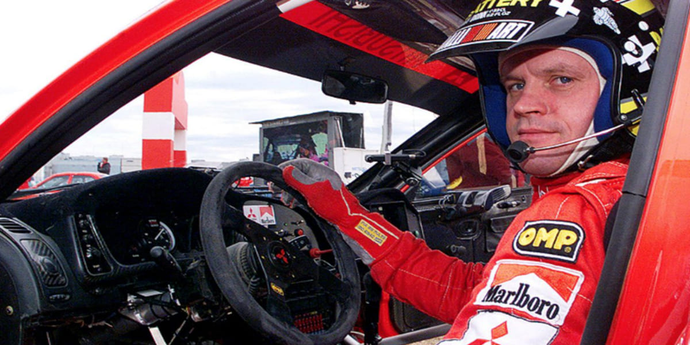
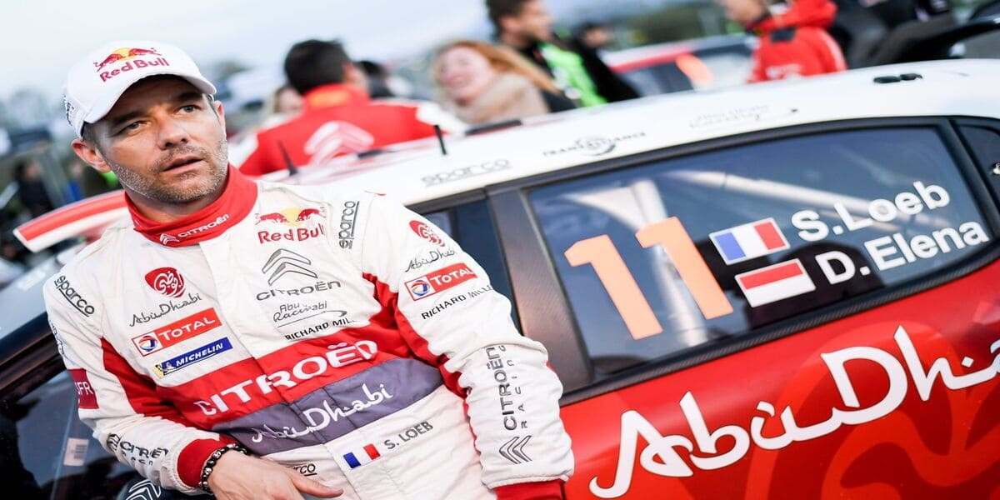
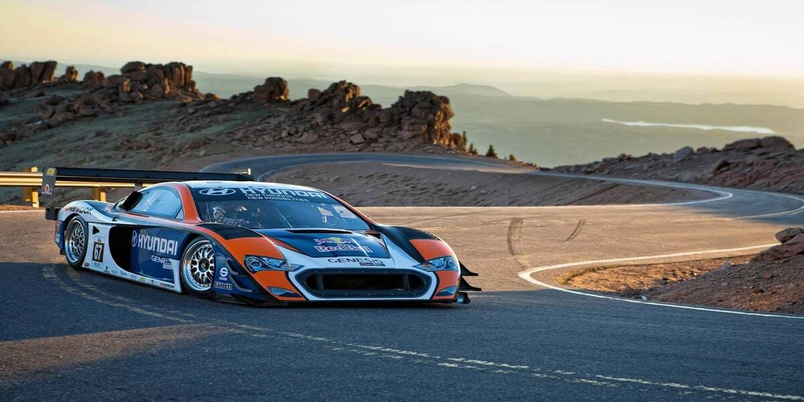
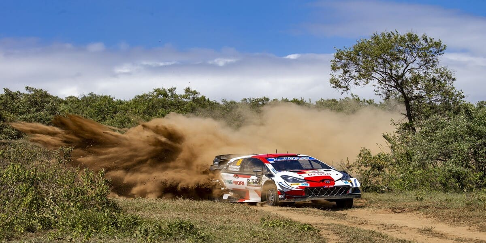

Adrenalina pura, curvas cerradas y motores rugiendo. Descubrí el mundo del rally como nunca antes:
carreras épicas, análisis técnicos y toda la pasión del deporte motor en un solo lugar. 🏁
👑 Tommi Mäkinen: El Arquitecto de una Dinastía y el Renacimiento de un Gigante en el WRC
Por Matías Felau • 9 de Noviembre, 2025

Tommi Mäkinen redefinió la consistencia y velocidad en el WRC con cuatro títulos mundiales consecutivos (1996-1999) al volante del Mitsubishi Lancer Evolution. Su dominio no terminó al retirarse: como Director de Toyota Gazoo Racing, lideró el regreso triunfal de Toyota al WRC con títulos de Constructores (2018) y Pilotos (2019). Una figura bicéfala de la historia del rally: tetracampeón invicto y arquitecto del éxito moderno de Toyota.
🔷 Subaru Impreza WRC: El Ícono Azul y Oro que Redefinió la Tracción Total
Por Matías Felau • 9 de Noviembre, 2025
El Subaru Impreza WRC, con su librea azul y dorada, motor bóxer turboalimentado y tracción total simétrica, se convirtió en leyenda automotriz. Tres títulos de pilotos (Colin McRae 1995, Richard Burns 2001, Petter Solberg 2003) y tres de Constructores consolidaron su dominio. Su legado trasciende la competición: las versiones WRX y STi llevaron el ADN del rally a las calles, creando un fenómeno cultural global en el mundo JDM.
🐐 Sébastien Loeb: El Dominio Inquebrantable y la Revolución del Asfalto
Por Matías Felau • 9 de Noviembre, 2025

Nueve títulos mundiales consecutivos (2004-2012), 80 victorias en el WRC y 118 podios. Sébastien Loeb no solo reescribió los récords del rally, sino que estableció un dominio estadístico probablemente insuperable. Rey del asfalto con Citroën, su precisión quirúrgica y consistencia en todas las superficies lo convierten en el G.O.A.T. del WRC. Su versatilidad se extiende al Dakar, Rallycross y su récord histórico en Pikes Peak (2013).
⛰️ Pikes Peak: La "Carrera Hacia las Nubes" y el Laboratorio de Potencia Extrema
Por Matías Felau • 9 de Noviembre, 2025

20 kilómetros, 156 curvas y 4.302 metros de altitud. Pikes Peak es una contrarreloj brutal donde los motores pierden hasta 30% de potencia. Desde Ari Vatanen en 1988 con el Audi Quattro hasta el récord actual del Volkswagen I.D. R eléctrico (7:57.148), esta carrera ha sido campo de batalla para leyendas del rally. La pavimentación completa en 2012 la transformó en laboratorio de aerodinámica extrema y tecnología EV.
🦁 Rally Safari de Kenia: La Supervivencia Mecánica y el Test Definitivo de Resistencia
Por Matías Felau • 9 de Noviembre, 2025

Miles de kilómetros de polvo, rocas, fesh-fesh y cruces de ríos. El Rally Safari de Kenia era una odisea épica de supervivencia mecánica donde los coches de apoyo volador y las reparaciones in situ eran esenciales. Dominado por vehículos japoneses indestructibles (Toyota Celica, Datsun), regresó al WRC en 2021 conservando su espíritu brutal. Un recordatorio de cuando el rally era tanto velocidad como resistencia contra los elementos.